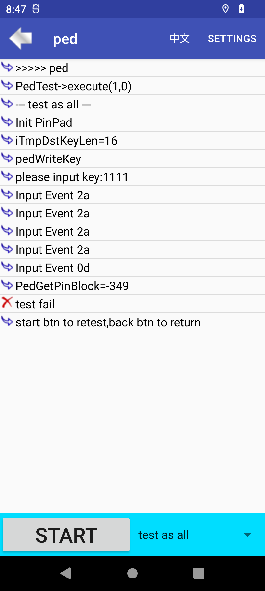

时间¶
问题描述¶
L0 状态下,机器开机,提示全部触发提示,点击OK,进入ftest,测试ped失败
分析¶
对现象做初步分析
机器在单板下载后,机器开机了,提示全部触发. 关机,或者掉电, 装成整机,整机的硬件触发没有问题. 开机,提示全部触发界面,点击OK,进入ftest,测试ped,提示失败 图片捉到的话,补两张
打开日志开关,setprop pax.ctrl.log 1, 放到abl,烧录进去,默认打开
然后搜索PAXCLI,Ped_Fun,这些都是ped接口的tag
跟ped同事沟通,认为是没有格式化ped引起,大家都提供不了准确的答案,只能自己捉log分析
先捉一个ped正常的log
打开一个触发点点,提示触发,如下图.

点击OK,进入ftest ped,结果如下

硬件整好触发点,重启,提示触发历史界面

点击OK,测试ftest ped 
log提示 -349,sp,返回P_ERR_PED_DATA_CRC_ERR,代表sp 没有格式化ped,
看开机流程,有格式化ped的初始化,看看加一些log,看看是否初始化条件没有满足
spdev.c-> SpdevOpen -> Spdev_FormatPed(1),先把条件注释,开机强制格式化ped,看看是否OK
int Spdev_FormatPed(int iPedState) { int iRet; ALOGE("victor,Spdev_FormatPed:iPedState = %d,\r",iPedState); /* if (iPedState == 1) { //SEK为空，则格式化ped, 触发不格式ped int sek = SPC_isSekClear(); int tamper = s_GetTamperStatus(); ALOGE("sek = %d,tamper == %d,\r",sek,tamper); if (!sek || tamper == 1) { ALOGE("!!!!!lanxq=not SPC_isSekClear:\r"); return 0; } } */ iRet = SPC_XosPedEraseKeys(XOS_PED_FORMAT_PED, 0); return PEDRet(iRet); }强制格式化后,问题不存在,加log发现是s_GetTamperStatus 返回值的问题,第一次返回0 ,再重启,一次,返回1
分析s_GetTamperStatus,该值就是从authinfo_sp.c->authinfo.pos_auth_info.LastBblStatus
authinfo_sp.c 添加log,捉取开机log 发现问题的原因,就是没有用sp实时传过来的LastBblStatus,而是或上了命令行的LastBblStatus sp触发,关机,修好,开机,sp把第一次历史记录传过来,开启后,sp又把没有触发的信息传过来,但是我们一直或上了一开始命令行的值,所以导致开机的时候,没有去格式化sp
authinfo.pos_auth_info.LastBblStatus=(val->intval | authinfo.pos_auth_info.LastBblStatus);
解决¶
在L0 状态下,直接使用sp传过来的实时值,不显示历史记录界面也没所谓
+++ b/UM.9.15/kernel/msm-4.19/drivers/misc/pax/auth_info_sp/authinfo_sp.c
@@ -474,7 +474,11 @@ static int authinfo_set_property(enum authinfo_supply_property asp,
authinfo.pos_auth_info.TamperClear=val->intval;
break;
case AUTHINFO_SUPPLY_PROP_LASTBBLSTATUS:
- authinfo.pos_auth_info.LastBblStatus=(val->intval | authinfo.pos_auth_info.LastBblStatus);
+ if(authinfo.pos_auth_info.SecMode == POS_SEC_L0){
+ authinfo.pos_auth_info.LastBblStatus = val->intval;
+ }else{
+ authinfo.pos_auth_info.LastBblStatus=(val->intval | authinfo.pos_auth_info.LastBblStatus);
+ }
break;
总结¶
sp 触发状态与否,与LastBblStatus 息息相关,后续遇到触问题的时候,可以先向这个值入手